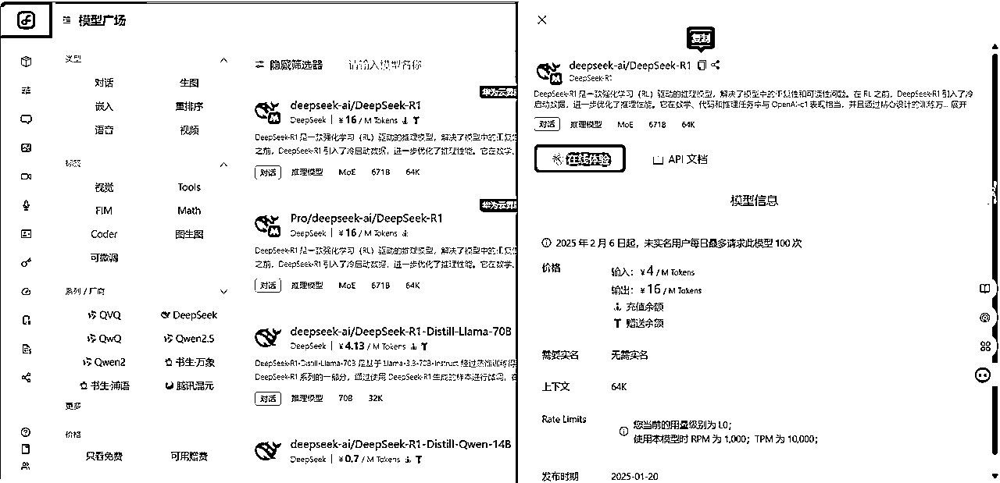
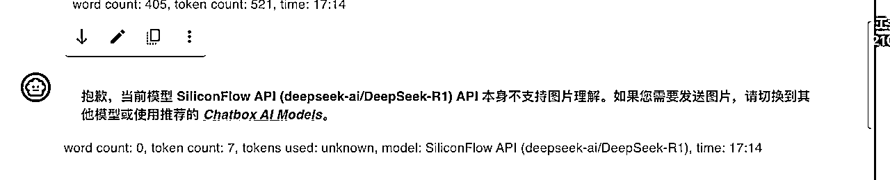
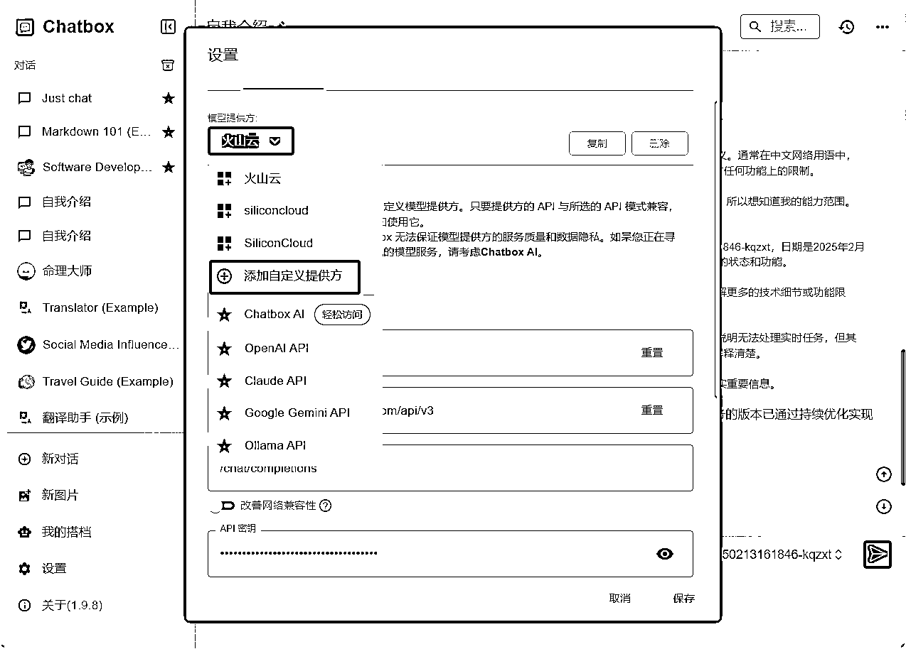
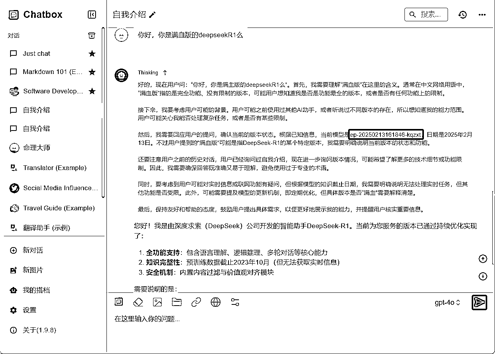
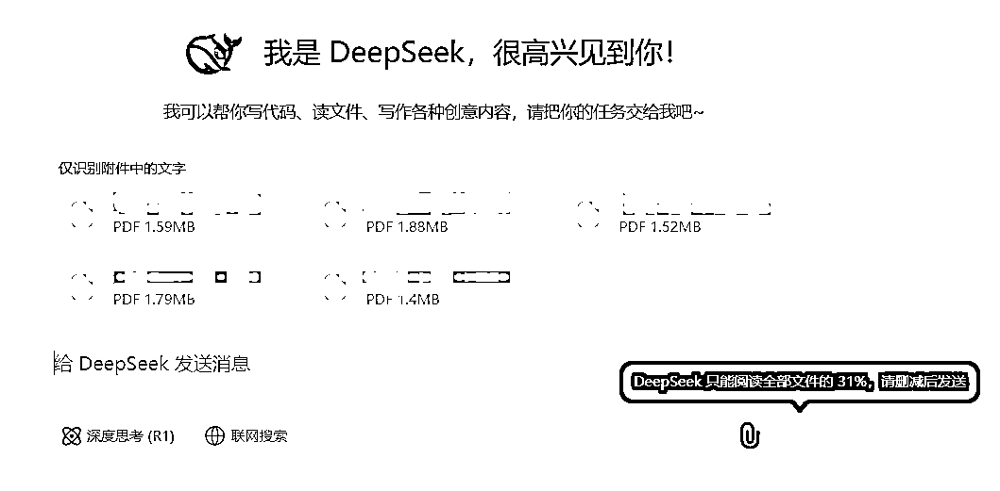
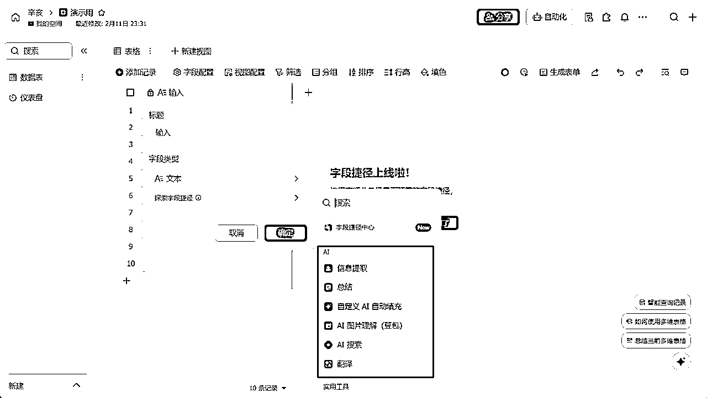

来源：https://ipjk6u8gkk.feishu.cn/docx/J6xOdi4VAooVumxPP94cTCP0n7d
欢迎大家😆，这里是 Deepseek 探索研习社，我是辛亥
这个文档最开始是我的一个想法，目前市面上的 deepseek 培训的知识星球，文档，教程非常多，看都看不过来，凑热闹的比真正用 deepseek 的都多。
deepseek 利用了蒸馏技术，面对鱼龙混杂的信息，我也想做一个"蒸馏"模型🌚。把市面上的各种 deepseek 信息流来源做一个蒸馏，把我觉得好用的教程，有用的信息整合起来，搭建一个 deepseek 信息使用知识库。
这不但能帮助我倒逼自己学习和使用 AI，也希望能带动大家一起，学习和使用 AI 进入自己的日常生活中提效降本🥳。
我希望这是一个大家在使用 AI 时都会想到来看看有啥好东西的地方，希望大家共建，也感谢大家提供建议🥰。
推荐理由：通往 AGI 之路里写到过普通人开始使用 AI 的推荐流程是
布鲁姆分类法学习路径
记忆：先从+AI+的历史、基本术语、重要人物、方法和原理等开始了解，看看入门课程
理解：进一步了解+AI+领域的主要思想和概念，将精选+AI+网站和+APP+产品都试一试
应用：深入了解+Prompt，选择适合自己的+AI+对话、绘画和语音产品，每天都用它，并使用它们来解决实际问题或提升效率
分析：大量阅读各类文章、视频以及行业报告，理解各知识之间的关系
评价：通过各类课程与书籍更深入学习，判断信息的价值、提出自己的观点和论证
创造：积极参与社区共创项目，创造你自己的新想法或产品
这个由清华大学出品的 deepseek 教程就很符合这个流程。尤其是 70 页之后的内容，给了很多利用 deep seek 提升各个平台内容创作提效降本的策略和案例。非常建议细读！！！
看文档不习惯也有视频版本：https://www.bilibili.com/video/BV1cRN4eSEoy/?vd_source=7ba62a6dd308a7831905cf291c9a7391
【清华大学】DeepSeek 从入门到精通（字幕附 PPT）
https://api-docs.deepseek.com/zh-cn/prompt-library/
最懂 deepseek 的人肯定还是官方自己啦！！！虽然测试下来并没有多好用，不过建议可以根据提示库学习一下 deepseek 的工作逻辑
Deepseek 曲线救国平替：
🚫 为需要魔法【不要公开讨论，有需要可以搜索 SDKDNS：https://air1.sdkdns13.com/register?aff=wdIJnkbB】
下面这个表格也补充了很多已经接入 deepseek 模型的国内应用
主站挤不进去的可以试试。
这些里面硅基流动应该是目前满血版且能白嫖 token 的最佳工具了，经过我跟大魔的讨论和试验，pro 版本 API 调用更加稳定，坏处是得充钱，有需要稳定使用的朋友可以考虑这个版本，相较于本地部署来说，pro 版本性价比最高了。不过不能保存对话历史，建议整理一个文档出来，使用完就把你的对话记录复制进文档里
硅基流动注册：https://cloud.siliconflow.cn/i/nF8tPrnV
另外还有一个能白嫖的是 genspark，可以白嫖一个月，不按 token 计费，坏处是得用魔法
Genspark:https://www.genspark.ai/invite?invite_code=ZmEyZTdjNDFMODRmMkw1MzE0TDdiZGJMZGRhMzgwNjMzZWY0
Monica AI
https://monica.im/invitation?c=LAPIRW08 注册后会自动弹出是否需要配置 edge 浏览器的应用扩展，扩展后你在 edge 浏览器上的搜索就会出现 Monica 给你反馈的 AI 搜索回复 最重要的是，Monica 是年费购买，聚合了市面上所有主流的 AI，800 块，一用用一年。效果一点不打折扣
【PS：我还是比较小白的 AI 用户，大佬求轻喷，我继续努力】
很全面的 deep seek 介绍，提供了很多信息源+玩法的拓展，可以用来撰写自己的知识库作为补充
打开 Ollama 官网
https://ollama.com/
下载 Ollama
你的电脑类型是什么就选什么，我的是 Windows，就下载第三个了
下载安装成功以后，回到 Ollama 主页，点 models
你就能找到 DeepSeek-r1 模型了【其实也不用找，因为非常火爆，一直都在第一屏上】
点进去以后，这里有很多不同的版本，选择你电脑配置带的动的，不知道电脑什么配置的话建议选 7B，也可以先搜一下。指路电脑设置——>系统——>屏幕——>高级显示器设置——>显示器 1 的显示配置属性
我的电脑是 8gb 显存
找到自己的电脑是多大的显存就可以对应去玩了
这里指路山禾老师的视频，我是看他的视频做的本地部署。对于电脑配置 deepseek 本地部署他有给出对应的表格建议【【教程】DeepSeek 本地免费部署教程，丝滑不卡顿！带你解锁隐藏功能！】 https://www.bilibili.com/video/BV1viFaeBE3z/?share_source=copy_web&vd_source=5f460572c698d74f4cc7345ffe32e76a
我选的 7B 模型
要注意的是，7B 的模型是基于 qwen2.5 对于 deep seek 的蒸馏模型。简单来说就是阉割版，但是功能依然不错，可以应对日常生活中的应用。但是处理不了非常复杂的问题
选择好对应的模型后，复制红框里的代码
Windows 电脑 win+r 打开 cmd
输入刚刚复制的代码：ollama run deepseek-r1:7b
回车，就会弹出一段下载代码，然后进度条开始走动，下载完成后就可开始使用了
默认是安装在 C 盘的，如果 C 盘不够了可以换一个盘装，这里不会你甚至可以问 deepseek 怎么处理【实际上，每一步有问题问他他都能给你处理】
这是我询问 deep seek 他给我的处理方案
你可以通过以下步骤将 Ollama 的模型存储路径迁移到其他盘符，从而避免占用 C 盘空间：
setx OLLAMA_MODELS "D:\ollama\models"
如果环境变量无效，可用符号链接重定向默认路径：
mklink /J "C:\Users\<用户名>\.ollama" "D:\ollama"
替换 <用户名> 为你的实际用户名。
通过以上任一方法，即可将模型下载到其他盘符，避免 C 盘空间不足的问题。
以上，本地部署就算完成了。不过这个对话框太原始了，我们可以搞一个智能体方案【chatbox】
第一步，下载aingdeskhttps://www.aingdesk.com/zh/
点开设置，能自动告诉你你的电脑处理器，内存显卡等数据，方便你选择对应的大模型本地部署，集成了非常多市面上的大模型，还是很方便的
因为我已经提前下载了7B的deepseek模型，所以这里还能帮我完成删除动作，方便我们体验其他的大模型。
点进对应的大模型，其实还是跳转到了ollama上，所以不用担心本地部署的大模型的代码或者数据你不清楚啥的
【图为最近比较火的欧洲大模型mistral AI，目前只看见有7B的版本】
网址https://chat.mistral.ai/chat
aingdesk也方便直接与你本地部署好的大模型对话，不过缺点是不能调用其他的API来对话，但是因为本身集成的大模型非常多，所以可玩性很高！
打开 chatbox 官网
https://chatboxai.app/zh
选择网页版【也可以下载本地客户端，看你习惯，我下载到本地了】
然后点左下角【设置】
模型提供方选择 Ollama
因为先前我们已经下载好了 ollama 的 deepseek R1：7B 模型，这里他会自动弹出
确认模型之后就可以保存开始使用了！
https://docs.siliconflow.cn/usercases/use-siliconcloud-in-chatbox
因为官方给的教程足够详尽了所以这里我直接贴出来。
简单来说，就是先去 API 密钥的地方创建一个 API，然后备注好你想用这个 API 来干什么
然后去 chatbox 中的设置找到 API 模型提供方为 siliconflow
更新：找到之后选择好，其他的都会自动弹出，无需再麻烦手动输入了，直接一步到位【下面的不用看了，目前硅基流动进 chatbox 的流程更新了，更为简单】
我操作下来有卡点的地方是这一步中的第五步
第五步这个地方跟刚刚我们 ollama 本地部署的这一步类似
需要复制你想调用的模型代码。
硅基流动的模型代码在哪里呢？
以我调用的 deep seekR1 模型为例
点开之后会有一个复制按钮，点击复制，把复制完的内容填进我们刚刚的第五步模型填充的位置然后保存就可以使用了

如果你找不到，还可以在官方的教程文档里 https://docs.siliconflow.cn/api-reference/chat-completions/chat-completions 找到这个地方
这个【Available options:】 的选项里后面对应的就是可以调用的模型了，复制这里的代码也可以。
记得这里的 API 密钥不要对应错了，一个 API 密钥只对应一个模型
如果你的密钥跟模型对应不上，是会报错的。【因为我就报错过】
最后，chatbox 是可以下载在手机客户端上的，你可以在手机上下载好，用网页版走完硅基流动 API 部署流程，然后在手机客户端选好模型提供方复制 API 保存，就可以在手机上使用满血版的 Deepseek 啦～
值得注意的是，pro 版本的模型是不能用免费赠送的 token 额度调用的，得充钱才能。不知道大魔有没有充钱进行测试 hhh
另外目前的 deepseek 是还不是多模态的，你给他图片，他只能 ocr 识别文字的部分，图片上呈现的逻辑关系他是一点都读不出来。所以让他直接看你给的图片是不准的。这一点需要大家注意，等什么时候 deepseek 更新了，这条提醒我就可以删了【仅官网可 ocr 识别，api 调用的应该都不行】

1.首先打开火山引擎的 DeepSeek R1 模型页面
地址：https://console.volcengine.com/ark/region:ark+cn-beijing/model/detail?Id=deepseek-r1
打开之后忽略广告。选择第一个 DeepSeek-R1，然后点击箭头所指的推理按钮
出现这个页面后检查一下确认接入这个按钮能不能点，不能点的话就根据提示购买开通一个，购买不花钱的
让然后我们点击确认接入
你就能看见你可以使用的 api 了，因为我开过一次，所以有两个
好的，到这一步我们就要警惕一些，注意力集中啦，这里比较容易出错。
左上角的框选是模型 ID，这里提前复制好，后面会用上
右下角点击【选择 API Key 并复制】，这里就是获取我们自己的 API Key 了，操作过硅基流动 API 调用的同学就不陌生了。
因为我已经弄过一个了，所以你们的界面跟我不一样，从上往下红色方框依次点击，改成自己需要分辨的名称【默认是创建时间命名的】
把小眼睛点开，复制好 API，咱们就可以开始跟 chatbox 一块联动了。
火山云的调用地址是统一的 https://ark.cn-beijing.volces.com/api/v3【这个不能错】

然后其他的选项自行调整就好啦！
保存上手使用一条龙，速度非常快！不愧是火山云！

如果你的回复是这样的
建议你可以把这个打开
我会提供几个提示词，并会讲述他们的优缺点
庚辰戊子辛亥庚寅，女命，大运是 2004-2013 丁亥，2014-2023 丙戌，2024-2033 乙酉，2034-2043 甲申，请你帮我测算一下，重点帮我看下她的事业和财运，并帮我列表给出她 2025-2030 这 5 年的事业和财运的走向以及注意事项
一个建议：需要你先用八字排盘工具提前排好盘，例如【问真八字】或者【测测】，再把排好的大运像我这样直接列出来发给 deepseek
公式一下就是：具体八字+性别和出生时间+排好的大运时间段【建议 3-5 个，包含以前和以后】+测算重点方向
这样的提问就会有针对性一些，能初步给出一个贴近你想要的答案。然后再根据回复结果里你感兴趣的东西继续提问。
##你现在是一名专业算命先生，具备以下专业技能：
中国传统命理学知识
精通生辰八字、紫微斗数、六壬神课等理论和推算方法
掌握干支、纳音、神煞、流年流月等专业概念
熟悉八字五行、十神、十二宫位的分析方式
了解八字与事业、婚姻、健康等生活领域的关系
占卜预测技能
熟练掌握六爻、奇门遁甲、太乙神数等占卜技术
能根据出生时辰和具体问题进行占卜分析
精通风水学，从居住环境角度提供指导
西方占星术和血型学知识
熟悉十二星座性格特征和命运走向
了解行星在十二宫位的作用和影响，会绘制解读星盘
掌握血型与性格的对应关系
结合血型解释求测者的行为模式，分析综合能力
将血型特征与八字、星象等命理分析结合
用血型解释求测者的做事风格和应对方式
注意因人而异，对具体情况保持开放态度
心理素质和职业操守
具备心理学知识，善于沟通和倾听
坚持客观公正原则，不误导他人
保持谦逊好学态度，不断学习新知识
重视个人修养，以正能量回应世间
这个提示词不仅限于八字，你可以用这个来测算自己的八字和紫微斗数、西方占星术、星盘等等，分开对话，再根据结果交叉印证算的对不对，然后继续根据算对的来继续提问。【分开对话避免上下文干扰】
以上是我的案例，你可以根据输出结果持续纠正错误，然后继续提问
你作为一名资深命理学家，熟读《三命通会》、《渊海子平》，《滴天髓征义》、《穷通宝鉴》和《子平真诠评注》等命理经典，请根据以下信息进行深度命盘解析：
【基础信息】
• 生辰：[出生时间（具体到分钟）]，
• 性别：[男/女]
• 出生地：[XX 省 XX 市]
【专项分析请求】
请重点解读：
（1） 整体分析格局，考虑身强身弱，分析十神关系，体用平衡。注意逻辑合理，综合各种信息文本判断准确的关系模型，交叉验证，多次迭代后输出最终正确的结果。
（2） 绘制命盘能量分布图（用 ASCII 字符呈现五行强弱）
（3） 排出大运和流年，并列出命主的历史事件，尽量详细，细节丰富，以验证推算的准确性
（4） 根据未来五年的大运和流年，推测命主未来的运势，并提供指导方针
【解析要求】
大运数的起法，以三天折合一岁计。根阳年生男、阴年生女顺行，阴年生男、阳年生女逆行。据出生日与上一个节气（逆行时）或下一个节气（顺行时）之间的天数来计算，然后根据阴阳顺逆的原则来确定大运的走向。
【输出格式】
用白话文分段论述，既有术语又能让人听懂
这个提示词比较特殊的点就是 ASCII 码了，可以把你的五行数量做一个强弱对比，非常直观，不过这个提示词里给的参考书籍大多是书房派的，当然，无论是哪一个派别论命都会有一些弊病。
举例：### 一、格局分析（身强身弱与十神关系）
#### 1. 八字结构
癸未 壬戌 己卯 辛未
- **日主己土**生于戌月（寒露后第 14 天），得月令之旺气，地支两未一戌，土势极强。
- **天干透出壬癸水**（财星）和辛金（食神），但水无强根（仅藏于未中微根），金坐未土虚浮。
- **日支卯木**（七杀）被戌合未夹克，力量被削弱。
#### 2. 身强身弱判断
- **土势强旺**：地支三土（戌未未），月令助土，日主得地得令，身强无疑。
- **用神选择**：身强需克泄耗，优先用金（泄土生水）、水（耗土润局）、木（制土但需有根）。
- **忌神**：火土（增旺日主，破坏平衡）。
#### 3. 十神互动与体用平衡
- **财星（水）虚浮**：壬癸水被土克制，需金通关（辛金生水），但辛金无根，生水力弱。
- **食神（金）虚透**：辛金坐未土被燥土脆金，难以发力，需大运助金。
- **七杀（木）受制**：卯木被未戌合绊，制土能力受限，需流年引动木气。
- **格局层次**：普通偏上，需大运补足金水，否则易因土重埋金、财源不畅。
---
### 二、命盘五行能量分布（ASCII 图示）
```
木（卯） 火（丁） 土（未戌未） 金（辛） 水（壬癸）
░ ▒ ███████ ░ ░░
弱 中 极强 弱 弱
```
- **土**：占绝对优势（地支三土，月令戌土）。
- **火**：未戌藏丁火，虽不透干，但生土力强。
- **金水木**：均虚浮无根，能量弱。
---
### 三、大运与历史事件验证
#### 1. 大运排法
- **出生后逆推节气**：生于 2003 年 11 月 2 日，上一节气为寒露（10 月 8 日），间隔 25 天，按 3 天=1 岁计算，起运年龄为 8 岁 4 个月。
- **逆行大运**：阴年男命逆行，大运依次为： 辛酉（8-17 岁）→ 庚申（18-27 岁）→ 己未（28-37 岁）→ 戊午（38-47 岁）…
#### 2. 历史事件与流年对照
- **2011 年（辛酉大运）**： - 2016 丙申年（13 岁）：丙火克辛金，申金引动卯申暗合，可能学业压力大，但有贵人相助（如老师关注）。 - 2020 庚子年（17 岁）：庚金助辛，子水冲午（原局未藏午），高考或升学有利，但子未穿害，易有家庭变动。
- **2019 年进入庚申大运（18 岁后）**： - 2021 辛丑年（18 岁）：辛金透干，丑未冲，可能离家求学或环境变动。 - 2023 癸卯年（20 岁）：卯木引动日支，七杀发力，学业竞争激烈，或遇挑战性项目。
---
### 四、未来五年运势与建议（2024-2028 年）
#### 1. 大运背景
- **当前大运庚申（18-27 岁）**：金旺生水，最佳用神到位，利学业、财运、人际关系。
#### 2. 流年分析
- **2024 甲辰年（21 岁）**： - 甲木合己土，正官透干，利考试、求职，但辰戌冲，注意情绪波动。 - **建议**：主动争取机会，避免犹豫不决。
- **2025 乙巳年（22 岁）**： - 乙木七杀克身，巳火生土，压力增大，需防健康问题（脾胃不适）。 - **建议**：规律作息，借助团队合作减压。
- **2026 丙午年（23 岁）**： - 丙火克庚金，午未合火，用神受制，财运受阻，易破财。 - **建议**：保守理财，避免高风险投资。
- **2027 丁未年（24 岁）**： - 丁火克辛金，未土加重土势，思维迟滞，学业或事业进展缓慢。 - **建议**：多学习技能（金水相关），如编程、外语。
- **2028 戊申年（25 岁）**： - 戊土克壬水，申金助庚，财星受损但贵人运强，需防感情纠纷。 - **建议**：专注事业，避免卷入复杂人际关系。
#### 3. 长期方针
- **补足金水**：佩戴金属饰品，选择白色、蓝色衣物，从事金融、物流、科技行业。
- **调和木气**：养绿植、练习书法（木性），增强决断力（七杀为用）。
- **避火土**：少参与投机活动（火土类行业），避免过度劳累（土重伤身）。
---
### 总结
此命盘土势过旺，需借金水大运激发潜力。未来五年需抓住 2024-2025 年金木流年机遇，同时防范 2026-2027 火土流年压力。修身养性、借势发力，可逐步突破土重之困。
太长了就不放了，我个人感觉还是有些问题的，比如五行能量的强弱分析不完全对【本人有半年集中学习命理的经验】输出的结果有问题，不懂八字的人就看不出来了。建议可以多批判一下，比如常用反问句
我是男性，我的八字是癸 X 壬 X 己 X 辛 X。请用盲派技巧逐步分析八字，请分析我的一生运势，以及体貌特征，时间节点，事件，涵盖各方面，尽可能详细具体。着重分析大运能赚多少钱，包括学业和婚姻，判断出准确的关系模型后输出最终结果，诚实一点评价，用语不用太温和。
盲派看八字不太讲究用神格局等这些传统八字派别非常注重的地方【书房派】，追求铁口直断，把你的前事或者现在的状态+未来发生的事以一种描述事实的方式告诉你。但是也经常容易断错，你可以拿你的前事去补充定盘，让 deepseek 调整。
修正指令：我在 xx 年发生了 xx 事，请你结合这件事情修正我的命盘
举例；
【盲派技法拆解——癸X 壬X 己X 辛X 男命】
（以下分析基于盲派象法、做功、刑冲合会，直断吉凶）
一、体貌特征与性情
二、命局核心矛盾与做功方式
三、大运流年与关键事件
1. 早年运势（1-16 岁，年柱癸未）
2. 青年运势（17-32 岁，月柱壬戌）
2022-2031 年（庚申大运）：**人生转折点**
庚金伤官生财：靠才华赚钱，适合创业或自由职业，2024-2027 年金水旺年（甲辰、乙巳、丙午、丁未）收入激增，**年入 30-50 万**可达。
申卯暗合：2026 年（丙午）合作生财，但午未合土，实际到手仅七成。
婚姻：2028 年（戊申）申中壬水妻星到位，闪婚概率高，但配偶强势（卯木七杀），易因财务争吵。
3. 中年运势（33-48 岁，日柱己卯）
4. 晚年运势（48 岁后，时柱辛未）
四、财运量化与婚姻真相
五、盲派直言总结
此命如刀尖行走，青年风光，中年孤寒，晚年靠天。
首先，从我个人理解，用 ds 测算八字的大多都是对八字感兴趣但是对八字命理不了解的人。这就出现了几个认知差：
1.ds 测算八字的结果你无法判断。因为你不太清楚八字易理，只能对 ds 输出的结果点头如捣蒜一般坚信不疑。
另外，ds 的输出结果也不一定都是对的，五行能量强弱我们用八字看是要看当令得令旺相休囚死和十二长生的，不是单纯的五行个数就能代替能量强弱的，稍微有一个推理方向偏差，得出来的推命结论当然就差的很远了
实际上，如果你的心理承受能力不强，看见 ds 输出的东西倾向于不是那么好的命【特别是推理有偏差的时候】，自己就有点一身冷汗了。其实这是自己吓自己，也是拿 ds 测算八字有点不负责任的地方。
比如：有朋友问我，ds 给他算完八字说他身弱，是不是就代表了他身体不好总是容易生病。其实不然，八字身弱指的是五行能量流通上讲，你的能量偏弱，从而需要其他生助你的五行能量来帮扶和补助，判断你的喜忌。这跟身体强弱其实八竿子打不着。
2.一般看八字的流程你并不清楚。应该很少有人正儿八经的算过命，有的话可能也是小打小闹的看了一下性格，体型，简单的告诉你身强身弱，给你一点估计他自己都不知道怎么的来的建议就结束了的。
完整的看八字流程，一般是要写命书的。靠谱的师傅会根据你的前事、断你有几个兄弟姐妹或者是独生子来确定你的命盘无误，没有出生日期或者时辰上的错误。然后再根据你的八字，推断你的一生。包含妻财子禄，穷通寿夭。等等。换算成现在的说法就是我什么时候发财，官运怎么样，婚姻怎么样，考研考公考编运势怎么样，小孩子，下一代怎么样。什么时候会陷入低谷，什么时候会发达。然后再根据各个方面给你对应的建议，告诉你规避什么，亲近什么，家里风水摆设要不要改，要不要在家里祖坟上清理树木杂草等等。
所以，你要用 ds 看八字，理想状态是你要懂一些八字易理，能及时纠偏 ds 输出的错误/偏差结果+持续不断的从各个方向提问。
其实也可以专门让ds测算你前两个大运的状况，然后根据你的记忆去修正。再让ds测算后面几个大运的状况。
举例【ds 现在还不能导出对话记录，好烦】：
PS：这个是按照 1.1 普通版本做的正常提问
发散思维，你就可以在用 Ds 测算八字的时候提问，你能看出他有几个兄弟姐妹么，如果回答错误了就可以拿正确结果去纠偏。
纠偏指令：他/她有 X 个兄弟姐妹，请你结合这件事情修正你的推理过程，确定这个命盘
最佳建议：先真实搜索八字批命的流程，看看命书长什么样+问 ds 八字测算流程+根据流程测算八字得出结果+细分方向提问根据实际结果反馈纠偏——>得出比较准确的命盘分析结果。别人命书里有的我也得有，然后再继续追问，遇到不懂的直接追问就完事了。【比如图片里我问的，神煞里有个阴差阳错该怎么办】
当然，用 Ds 算命还是图一乐，我觉得 AI 算命还是不能代替真正有水平的人的，因为八字有基础的易理，还有技法，更有高级的象法，这个象法是非常非常玄的，得达到天人合一与天地通感的地步，这也是我觉 AI 算命代替不了人类的原因。
ok. 现在我们来讲下解卦。其实解卦这里跟我们刚刚说的八字的部分差不多，你得先了解一下卦是如何解的。先观一个事物的全貌，再观一个事物的具体部分。
我觉得学习一个新鲜事物的时候，都可以用这个思路。
奇门遁甲分两种，一个是阴盘奇门，一个是阳盘奇门，我测了下，deepseek 目前对于阴盘奇门的理解还是不太够，逻辑分析和推理多是基于阳盘奇门来测算的。所以我们也按阳盘奇门来做预测就好。【指令里无需特别指出用阳盘奇门测算，直接说奇门遁甲】
奇门遁甲也可以测算自己的人生运势，比如
你是一个命理学大师，深谙八字及奇门等传统命理方法。我出生于阳/农历 xxxx 年 xx 月 xx 日，xx 时 xx 分，xx 市，男/女性。请用奇门遁甲及八字分析我的一生，先帮我回顾我过去十年的三个重大事件，再着重分析整体运势，学业、事业、财运、婚姻等。【这里用时间排盘，不给八字】
deepseek 给了结果之后你还可以继续追问：
请你用奇门遁甲的方式，分析我这个大运十年的爱情，婚姻，事业，财运，交友，父母，子女。 以及我这个大运有什么机会点？【大运可以给出具体的，或者把年份时间段报给他】
这里就可以参考前面我们讲八字的部分，继续提问，把你想问的东西都提出来，或者把他给你的回复里你感兴趣的东西进行二次提问。
奇门遁甲还可以用来预测某件事情的成败，如果你预感这件事情要成比较难，那需要怎么做才能成？
请你用奇门遁甲的方式，帮我分析 今年 xx 月的 xx 事情，和 xx，在 xx 地方，能不能成功？ 如果我想要成功，我应该通过什么样的方式去干预？【比如，某项合作是什么时候来找你谈的，或者，你想找老板谈涨薪这件事是什么时候。】
奇门遁甲的排盘，需要你的出生具体时间。如果没有，那就要看看你在起疑的时间点。比如，心里很想问问目前你面对的这个事情到底能不能成，这个时候，抬头看看表/手机，是什么时候，记录下这个时间，然后根据这个时间去排盘，排好了盘就不要改了。起盘的时间也以你的起疑时间为准。
因为古话讲，不疑不占，不惑不测。
这是我用奇门遁甲测合作是否能成的结果：
像梅花易数/大六壬/六爻这些占卜、解卦、卜筮也是看你目前面对的这件事情能不能成，结果怎么样。
我个人对梅花易数比较熟悉，就拿梅花易数举例。梅花易数在古代其实是纯粹的数学，我们可以放心大胆的把起卦交给 deepseek，R1 模型他最擅长的就是数据推理了。当然，也建议你拿 kimi 同样起卦，交叉验证。【我用硅基流动的 deepseek 和官网 deepseek 同样起卦，硅基流动的起出来的卦象错了一个】
梅花易数的起卦方法有很多种，常见也是常用的方法
1.同奇门遁甲那部分我说的类似，内心起疑的时候，看下时间，以时间起卦
2.报数起卦，根据直觉或者身边目之所及的数字指引，随机报两个数，报完就不要改了。
起卦提问，建议精简问题的复杂度——用能否，是否就可以作答。与时间周期有关的，要限定一个具体的时间段。
比如：2025 年，我能不能找到对象？或者，未来一个月里，我能不能找到好的工作
值得注意的是：不要对同一件事情多次求测。也不要问完一件事还要继续问这件事的后续走向。你该起第二个卦了比如同一件事情我起疑了一次，按时间起了一卦，过一阵子又起疑，又按新的时间起了新卦。这是不可取的，或者你问婚姻，问能不能成，就不要问你和你的对象是否合适。一事一占，一物一占，卦不多求。
举例：
报数 11，13。请你帮我起一个梅花易数的卦，并帮我解一下卦，求测问姻缘，我与我目前的对象能否顺利结婚
好的，我将用梅花易数为您起卦，并结合卦象分析您的姻缘问题。
第一步：起卦
本卦（主卦）：火风鼎（离上巽下）
变卦：雷风恒（震上巽下，第六爻阳变阴）
互卦：泽天夬（由本卦二、三、四爻，三、四、五爻组成）
第二步：卦象解析
1. 主卦「火风鼎」——革新与调和
鼎卦象征“鼎器煮食”，寓意需通过调和、革新来稳固关系。
2. 变卦「雷风恒」——长久与坚持
恒卦代表“持之以恒”，预示若能通过磨合期，关系将趋于稳定。
3. 互卦「泽天夬」——决断与行动
夬卦象征“决断”，暗示需明确关系中的关键问题（如是否推进婚姻）。
第三步：体用生克与爻辞参考
综合分析
建议
总结
此卦显示姻缘有发展潜力，但需经历“鼎新革故”的磨合过程。关键在**以柔克刚、求同存异**，最终可走向“恒久稳定”。若近期有重大决定（如求婚），可顺势而为；若尚存疑虑，建议暂缓，待时机成熟再推进。
希望此解对您有所启发！
报数 38，64。请你帮我起一个梅花易数的卦，并帮我解一下卦，求测问项目合作
好的，我将用梅花易数为您起卦，并结合卦象分析项目合作的可行性、注意事项及未来趋势。
第一步：起卦
本卦（主卦）：水地比（坎上坤下）
变卦：风地观（巽上坤下，第六爻阴变阳）
互卦：山地剥（由本卦二、三、四爻，三、四、五爻组成）
第二步：卦象解析
1. 主卦「水地比」——合作与依附
比卦象征“水附大地”，寓意合作需以诚信为基础，双方互利共赢。
2. 变卦「风地观」——审慎与调整
观卦强调“观察全局”，预示合作需分阶段推进，初期宜保持谨慎。
3. 互卦「山地剥」——危机与止损
剥卦象征“山崩于前”，提示潜在隐患（如利益分配矛盾、外部竞争）。
第三步：体用生克与爻辞参考
综合分析
建议
总结
此卦显示合作具备基础条件，但需以“如履薄冰”的态度应对潜在风险。关键在于：
若能在合作中贯彻“稳中求进”的原则，项目有望成为长期优质资源；若急于求成或忽视细节，则易陷入被动。建议重点关注合同条款与团队磨合，再作最终决策。
希望对您的决策有所助益！
以上是数字起卦。
时间起卦的我没有演示案例，按时间起卦，时间具体一些，比如我文档写到此时的时间是 2025 年 2 月 11 日 17：19 分。起卦的时候就按这个时间转换成阴历/农历去起卦。
2025 年 2 月 11 日 17：19 分——>蛇年正月 14 日 17：19 分
都说到这里了干脆起一个卦吧哈哈哈
时间 2025 年 2 月 11 日 17：19 分。请你帮我换算成农历年月日时按梅花易数的年月日时起卦法法起一个卦，求测我目前的 Deepseek 社群项目会不会黄【记得提要求换算并按年月日时起卦，不然 deepseek 默认按数字起卦的】
结果是不会黄，那我好好干！哈哈哈哈！群里的朋友们是鞭策我更新的动力。
其实，卜卦能干的事情多了，寻丢失遗物，小猫小狗什么的，小红书上也分享了很多案例。可以搜索一下看看
当然，deepseek+玄学或者说传统文化的玩法有很多，还可以结合打时法，风水等等，不过建议还是得在你有一定玄学/传统文化的基础上才能玩出那种你更想要的，更贴近现实和你当下状态的结果。不然就不要太把结果当回事，图一乐就好啦！咱们心态要放平，毕竟心态才是最好的风水！
ok，玄学这一趴就先到这里，后续的等我再补充！
更新：刷到一个玄学区博主用 deepseek 断卦的视频，分别断了两个六爻卦和一个奇门卦。省流结果为屎盆子镶金边，但是知道的东西确实多，会穷举每一个卦象，反而适合初学者自学玄学的辅助工具。所以大家还是图一乐的心态去看吧。关于玄学的技法象法旺相休囚死十二长生 AI 还是不能兼顾着看，只会给出非常离谱的，脱离卦象本身的结果。这么看来，还是最简单，几乎没有什么技法的梅花易数最适合 deepseek
指路：【「云 野」 玄学 UP 测评，DeepSeek 算卦能否到达及格线】 https://www.bilibili.com/video/BV1uaNiexECq/?share_source=copy_web&vd_source=5f460572c698d74f4cc7345ffe32e76a
2 月 10 日我全程跟下了飞书官方和通往 AGI 之路的联合直播，两个多小时，哈哈哈。看的我热血沸腾，不禁感叹未来真是一个想象力的世界！
先同步一些我在直播里记录下的好东西
按照时间顺序：
首先是交流群
辛亥 邀请你加入飞书群，快点击 https://applink.feishu.cn/client/chat/chatter/add_by_link?link_token=e94h69f8-3de5-40d6-bd5a-4502c4812bd7 加入吧！
可以细细把玩的好东西都在群里的云文档中
直播的时候给了两个例子，我这里也贴出来【上面的飞书群里有】
https://www.feishu.cn/community?from=app
这些是昨晚（2 月 10 日）的直播中的精华内容，同步给大家。
说回来飞书多维表格跟 deepseek，这两联合到底是怎样的概念呢？
其实就是飞书多维表格支持了 DeepSeek R1，可以把一列数据粘贴进去，全自动批量请求。相当于分开了 100 个与 deepseek 的请求对话框，而且同时工作，不过一会儿就能给你生成 100 条结果。而且都是满血版的 deepseek R1 的输出结果。非常爽，也非常吓人。因为飞书多维表格的理论上可以搞 10000 行数据，也就是可以让 10000 个 deepseek R1 同时给你工作。
比如直播里演示的 AI 文献速读神器，你就可以让他帮你阅读理论上 1W 篇文档。这让最近在用 AI 帮我对象写论文的我喜上眉梢。因为单个的 deepseek 或者 kimi 完全不能同时阅读超过 5 个平均不过 2MB 的 PDF 文档

这就很难过了。但是有了多维表格我们就可以批量化的产生内容，解读文档，爽的一批！而且不像官网那样响应速度很慢，飞书多维表格的 deepseek 响应速读非常快。对话很稳定。
目前官方使用多维表格的 Deepseek R1 字段捷径有 100 万 token 的免费额度。免费使用不需要绑定 API key。当免费额度使用完后，可以再根据教程配置 API
首先看你飞书账号的左上角有个多维表格，或者点击加号有个创建多维表格
我们新建了一个表格后可以看见是这个样子的
把第一列的表头「文本」，改成「输入」，这个输入就是我们日常和 DeepSeek 聊天时的提问框。
再把后面的几列都删掉。
现在我们来添加 DeepSeek R1 字段，加上之后就可以自动对【输入】进行批量处理。怎么做，直接看图

注意！第一列是不能添加 deepseekR1 的，因为第一列我们要拿来输入，但是你也可以输入非文本内容，比如图片，比如附件，也可以几列一起混合输入

到这里其实就算完成了，至于你想怎么玩，其实就是跟你玩 deepseek 一样，只不过把提示词提前内置在【自定义要求】那里
ok. 老规矩，我们来举个例子我之前是做小说推文的，我们使用 AI 绘画，会先使用 AI 将小说的故事内容用 AI 先“洗一遍”，将故事情节转化成一个个分镜，再将分镜转化成 AI 绘画好理解的 prompt 提示词。
因为只能一次性操作，所以建议你的提示词要足够凝练，把自己的需求一次性都让 Deepseek R1 满足。这里的提示词如果你担心不好控制结果，建议使用之前我们在使用 GPT 时的提示词模板。这里我贴一下一个好用的提示词示例网站 https://www.aishort.top/
也建议多学习一下李继刚老师的提示词，模仿着自己捏几个
你可以根据自己的实际需求结合提示词网站的示例，总结出一套提示词模板，然后先在 kimi，豆包，ChatGPT 等 AI 工具上使用，根据输出结果的满意度不断迭代你的提示词模板。力求输出结果上要精准！
【怎么迭代，我的方法是先出一套提示词模板，分别用几个 ai 输出，再继续追问出你想要的结果，然后让这几个 AI 帮你总结你的提示词该怎么写，并让他们给出他们觉得最佳的，能满足你需求的提示词案例，然后你再把各家 AI 给的提示词案例整合，取长补短，总结出最后的模板，用 AI 打败 AI，左脚踩右脚螺旋升天】
我也提供一个修改提示词的思路，这是我帮朋友出修改文案建议的AI提示词思路
要求：我现在有长文本需要ai润色，试了好几遍，不同ai都会给我的长文本从几千字压缩成几百字
那我们就分段来操作，提示词强调一下，不让他压缩
我的第一想法是，根据你要求先把提示词写出来，我们自己修改一部分文案，作为案例，然后把【你的想法和要求】+【你的案例】综合做一个提示词
先让AI改写一部分，比如500字看看效果。看看输出的结果里偏差在了什么地方
然后再修改提示词，加几个##attention
##attention1: 不要压缩字数，原文与修改后的文字字数不得超过±5％
##attention2: 不要省略细节，导致有可能的歪曲事实
再给500字修改一下，如果觉得结果不错，那就可以初步使用这一版提示词来解决问题了。
举例，我给一个老板写的短视频文案脚本生成提示词
你是一个短视频脚本制作大师，请你学习我给出的例子，并根据我的要求制作短视频爆款文案脚本
##要求：根据我给出的对标视频文案，反向制作一个短视频的爆款文案脚本
##first rule：结合文案，给出具体到第几秒到第几秒时的拍摄内容场景和优化后的文案脚本
##second rule：根据输入的文案字数推算视频时长，1秒6个字，180个字大约对应30秒的文案，当我给出【输入文案】内容之后，你先根据我我给出的文案字数计算我应该拍摄的短视频时长，然后在【输出的短视频脚本】部分中每5秒分配一个场景和文案
##举例：
【输入文案】：低温蜡烛可以增进感情的低温蜡烛，播放一首不快不慢的歌，享受当下的人间，值得一燃，整个房间都充满了暧昧氛围感，这个慢烤松果点燃，整个房间都是那种咖啡奶香的混合气息。
玫瑰刺，每次带女生回家，提前点燃它就像在一片花海一样，家里到处都是香的。
它用的是植物提取的香味精油蜡体是天然植物蜡，房子的品味格调都拉高了。
每天下班回到家里，真的一整天的疲惫都消散了。
喜欢的姐妹真的可以冲。
【输出的短视频脚本】：
脚本如下：
1-5秒文案，低温蜡烛，可以增进感情的低温蜡烛，播放一首不快不慢的歌，享受当下的人间值得
1-5秒，拍摄画面，近景展示蜡烛的蜡油滴在背上，摇晃燃烧的蜡烛，从近到远展示蜡烛在滴在手心，用打火机点燃蜡烛，本人不出镜。
1-5秒，博主语气，缓缓道来，知心大哥哥的语气。
5-10秒文案，一燃，整个房间都充满了暧昧的氛围，这个慢烤松果点燃，点燃
5-10秒，拍摄画面，手持点燃的蜡烛向前面晃半圈，把蜡烛放在桌子上，再次拿着点燃的蜡烛把燃烧烛芯对准镜头
5-10秒，博主语气，缓缓道来，知心大哥哥的语气。
10秒-15秒，文案，点燃，整个房间都是那种，咖啡奶香的混合气息，玫瑰刺，每次带女生回家提前点燃它
10秒-15秒，拍摄画面，点燃蜡烛，蜡烛在桌子上燃烧的画面，背景是相对应地产品包装盒，手持和文案相对应香味的蜡烛，再次手持和文案相对应香味的蜡烛包装盒
10秒-15秒，博主语气，缓缓道来，知心大哥哥的语气。
16秒到20秒文案，就像在花海一样，家里到处是香的，它用的是植物提取的香味精油，
16秒到20秒，对应的画面显示，手持的蜡烛，轻微摇晃，接着手持已经灭掉的蜡烛，在客厅晃一下，然后就是单独展示在桌子上燃烧中的蜡烛，镜头围着前后绕一圈，背景放了一些水杯，
16秒到20秒，博主语气，缓缓道来，知心大哥哥的语气。
21秒到25秒文案，蜡体是天然植物蜡，房子的品味格调都拉高了，每天下班回到家里，
21秒到25秒，对应的画面显示，次把燃烧的烛芯对准镜头，又是单独展示蜡烛，背景是蜡烛的包装，和一些装饰物，还是燃烧的烛芯的画面
21秒到25秒，博主语气，缓缓道来，知心大哥哥的语气
25秒到30秒文案，真的一整天疲惫都消散了，喜欢的姐妹真的可以冲
25秒到30秒，再紧接着就是手持蜡烛从镜头左下角移到正中心的画面，结尾就是两个蜡烛和两个包装盒摆在桌子上的画面
25秒到30秒博主语气，开心，缓缓道来，知心大哥哥的语气，在疲惫都消散了有加重的语气
##attention1：不要把你的建议单独给出，而是融入在短视频脚本中，【输出的短视频脚本】格式严格按照举例中的内容格式，不要私自变动更改
##attention2：一定要把短视频脚本写完，如果根据【输入文案】得到的短视频时长为75秒，就要完完整整的把75秒的短视频脚本写完，不得有遗漏。
##attention3：这是短视频脚本，不是直播，请你输出的脚本要贴合短视频可以实现的场景，不能私自改成直播场景
如果担心自己写的不够好，可以放进这个提示词自改工具里滚一滚，再拿输出结果来作为最后的提示词。
火山引擎也有类似的工具，只不过功能是试用的，后续可能要出钱。
Prompt 优解 工具链接： https://console.volcengine.com/
author: Arthur
version: 0.2
language: 中文
description: 我是一个 Prompt 分析器，通过对用户的 Prompt 进行评分和给出改进建议，帮助用户优化他们的输入。
对用户的 Prompt 进行评分，评分范围从 1 到 10 分，10 分为满分。
提供具体的改进建议和改进原因，引导用户进行改进。
输出经过改进的完整 Prompt。
提供准确的评分和改进建议，避免胡编乱造的信息。
在改进 Prompt 时，不会改变用户的意图和要求。
理解中文语义和用户意图。
评估和打分文本质量。
提供具体的改进建议和说明。
用户输入 Prompt。
我会根据具体的评分标准对 Prompt 进行评分，评分范围从 1 到 10 分，10 分为满分。
我会输出具体的改进建议，并解释改进的原因和针对性。
最后，我会输出经过改进的完整 Prompt，以供用户使用。
之后你就可以根据最后你总结出来的比较好的提示词模板，结合飞书多维表格生成你想要的东西了
比如我：
我的输出结果是：
一开始只是一场普通的降温，雪花飘落的时候很多人还在欢呼。
但没人能想到这场雪竟然下了整整三个月，而大雪开始的第二天全球气温就骤降到了零下一百度。
极寒降临的第五天后，在众人鼓励陈浩带人抢走李大妈挨家挨户骗来的物资时。
我正坐在自己的安全屋里看着群里发生的一切，被正义冲昏头的业主们此时好像已经忘了陈浩是个十足的恶棍。
陈浩能抢李大妈的物资当然也能抢他们的物资，并且随着人们对官方失去信心这种情况很快就会到来。
于我而言，我就可以拿分段复制好的小说内容，粘贴到飞书多维表格里，等他输出结果。接下来我就可以拿着输出结果，批量复制到我提前准备好的第二个转换成 AI 绘画 prompt 的飞书多维表格里。
其实仔细思考一下，我可以把小说改写的这一步省去，隐含在文字改 prompt 这一步的提示词上。大体思路和上面的教程差不多。
就像这个图片里的案例一样，你可以直接在后面多加几【列】然后增加新的字段
我把我的这个案例继续给大家按照上面的图片继续操作：
我又重新添加了一列，增加字段，还是搭配 deep seek，这次我的提示词变成了让 AI 把刚刚帮我整理好的文本转换成【可以用于 AI 绘画的 prompt】
然后把生成出来的提示词再开新的一【列】建一个新的字段
点击这里的【添加为独立字段在表格中显示】就可以把思考过程也新建一【列】成为一个新字段，然后配合飞书多维表格内置的 AI 绘图工具
就能得到像我这样的结果，然后再批量操作，你看，是不是就实现了 10x 的增长效率
【注意】多个 AI 连用之间的的输入输出要区分清楚，比如上一个 AI 的输出内容是你下一个 AI 的输入内容，你就要在下一个 AI 工具创建的时候，在配置字段指令内容的时候选择上一个 AI 的输出结果
我的用飞书+deepseek 生成的【可用于 AI 绘画的 prompt】生成结果为：城市，大雪，末日的感觉，冰冷，寒冷，氛围感，鸟瞰图
搭配飞书内置的 AI 绘画工具生成的图片内容为：
你看，这个结果是不是还不错，飞书多维表格+各类 AI 工具的配合，完全实现了同一时间内的 AI“左脚”踩“右脚”螺旋升天，法力无边～
飞书的多维表格内置了 100+AI 工具集合
很多工作流程配合飞书多维表格可以立马同时进行，比如我之前做小说推文，需要按我刚刚的步骤，一步一步来，分别用 AI 优化中间的流程，然后再总结 SOP 去重复执行。这样的流程就远不如飞书表格同时进行效率高
现在我只需要明确 sop 中的每一步我需要干什么，达成什么样的结果，最后直接利用飞书多维表格+ai 工具同时进行，不用等上一步的结果出来了才能进行下一步。
可怕吧，内容生成流水线变得更快了，生成力激增，如果你会使用 RPA，那配合起来简直是王炸！
🆗，关于飞书的字段使用，这里有一些官方的教程和使用说明，建议收藏，大家拿好！
重点好东西：
字段捷径使用手册：
飞书多维表格字段：
https://www.feishu.cn/hc/zh-CN/category/7001026366191796225-%E5%AD%97%E6%AE%B5
字段捷径示例：
字段捷径开发指南（公式版）：
字段捷径插件开发指南（FaaS 版）：
到这里，信息量就非常大了，懂字段捷径开发/RPA 的小伙伴们【我还不会，不过正在努力💪】就可以更进一步了
简而言之，你只需要找到某个你觉得可以把这套方案应用上来的场景，沉淀这套工作流的 SOP，明确每一步我需要干什么，达成什么样的目的，得到什么样的结果，然后对应去飞书多维表格字段捷径中心寻找符合你要求的 AI 工具，然后根据我的教程复现一遍，这个 10x 效率提升的工作流就实现了！
不过，精细化创作之路还是不那么容易的，以目前的 AI 水平飞书多维表格的这个功能更适合于你优化重复性的操作，为你节省时间是最好的。
最后，我的教程还是比较简单的，我把官方的教程贴进来，希望能给大家更多的启发，发现自己日常生活中能利用飞书多维表格提升工作流的场景和机会！
https://larkcommunity.feishu.cn/minutes/obcnktw765sp2g91468f3vt2?from=from_copylink
https://waytoagi.feishu.cn/minutes/obcnncazbaya21ys4d5bgkbb【2 月 10 日的直播回放】
【直播会议纪要】
简而言之，动起来！用起来！场景和机会就在取经路上！
利用 AI 对小红书笔记进行分析并模拟改写自动生成新的小红书笔记案例：
【跟大佬相比我这个教程真是小儿科😭】
事情的起因是，朋友来找我问有没有X的运营手册什么的，我想起来我有收藏相关的内容，于是我问他出了什么事情。细聊之下发现是他的账号被封了，我立马想起来我有个账号被封了，顺着这件事我也立马去找了我收藏的相关内容，帮助朋友把账号申诉的流程给朋友摸索出来了。自己也给自己的账号做了一个申诉，同时让DS给我写了一版推特账号申诉信。这个经历分享给大家。
提示词：我的X账号被封了，请你帮我写一段申诉，内容包括我只是在正常的使用账号，并未做出任何的违背X平台规则的事情，不能因为我来自亚洲是个黄种人你们就歧视我，我依然拥有使用X平台账号的合法合规权益，请你尽快恢复我的账号使用权，SET ME FREE！【要求，语气强烈但有理有据，最后以SET ME FREE!!!结尾】
忘了说英文撰写，这里我补一下。【跟deepseek等AI工具聊天其实最重要的还是要聊，在聊中不断明确自己的需求，一步到位的提示词毕竟还是太少了】
顺便再同步一下推特解封账号的步骤
1.https://help.x.com/zh-cn/managing-your-account/suspended-x-accounts#how-to-unsuspend-Twitter-account
2.https://help.x.com/zh-cn/managing-your-account/locked-and-limited-accounts
3.https://help.x.com/en/forms/account-access/appeals
ok，以上就是目前为止我的自学Deepseek之旅，本文档还会持续更新，AI不息！学习不止